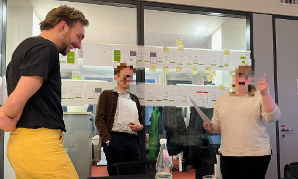
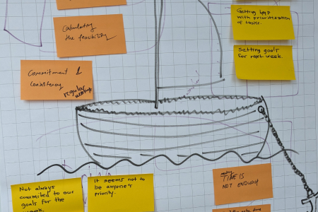

5 years in UX
UX Generalist
- Wireframing like a weasel ü¶´
- Running research like a rabbit üêá
- Developing like a dolphin üê¨
- Facilitating like a falcon ü¶Ö
I've worked with
My skills:
UX Generalist
I've worked with
My skills:
User Experience
I'm a passionate UX leader with a proven track record of identifying pain points and translating them into user-centric solutions. I leverage my UX expertise to collaborate effectively with developers and product teams to drive business growth.
Workshop with IBMiX & BARMER
User Interfaces
With a deep understanding of interface design principles, I transform digital products. For example, the Verimi App redesign I led achieved 2x user growth, generated significant media coverage, and ultimately fueled an investment spike for the company.
User Testing
Leading user research for eHealth apps serving over 12 million BARMER insurees, was super inspiring. Leveraging moderated usability tests, I identified key user pain points and translated them into actionable insights. The learnings ensured a smooth launch of our first-to-market product.

Moderating Usability Tests
Research for growth
I'm excited about leveraging research to drive product growth. Utilizing A/B-Tests, surveys and interviews, I have composed UX metrics empowering Verimi to measure the impact of Design changes. I also establish processes for scalable ResearchOps resulting in cost savings and increased efficiency.
Design Systems
I develop robust Design Systems for both enterprise and B2C contexts. My work on the HTW Berlin Design System included creating Figma templates, reusable Web Components and a Storybook documentation system.
Leveraging my Design System expertise, I played a key role in transforming the Verimi ID Wallet into a successful SaaS product, empowering developers to build features rapidly.
Front-End & Agile
I engineer responsive Web User Interfaces and Design Systems with Storybook.js, Web Components, MaterialUI and React (this website is also my doing ü§¥üèº). I love facilitating agile collaboration within product teams.
See it in action
Strategist
Capable to define impactful Product and UX Strategies (Strategy Course fall 2022) reaching business goals.

Design Team Guiding Principles
Facilitator
I lead with facilitation, building strong participative team culture. Utilizing workshop methodologies at Verimi, enables my design team to grow, set and reach business goals.
Mentor, Coach & Sponsor
Ability to motivate and inspire my team members to tackle challenges through caring mentorship, sponsorship and coaching.
Critique Culture
I can build an open culture of critique, learning and growth through facilitation. - Feedback Workshop Case 
Sailboat exercise
Happy to hear from you!
We can talk big in German and English or can have small-talk in Swedish üá©üá™ üá¨üáß üá∏üá™